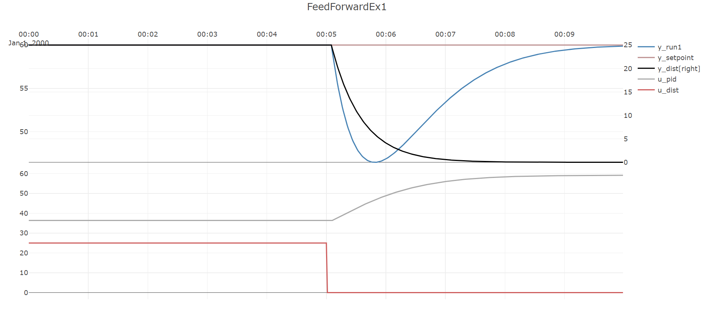
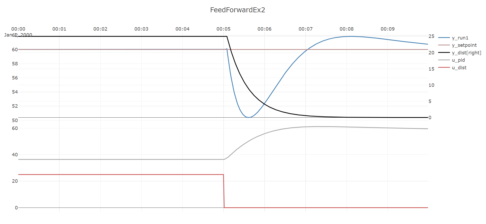

Feedforward control
 .
.
Simulating pid-control against an external disturbance without feed-forward
The first part of this example shows the performance of the process and PID-controller when
a step change occurs in the disturbance signal.
Note that while the PID-controller is able to stabilize the process, it does create significant
offset in y, it falls to about y=46.5 at its lowest.
var processParameters = new UnitParameters
{
TimeConstant_s = 30,
LinearGains = new double[] { 1.1 },
U0 = new double[] { 50 },
TimeDelay_s = 0,
Bias = 50
};
var disturbanceParameters = new UnitParameters
{
TimeConstant_s = 30,
LinearGains = new double[] { 1 },
U0 = new double[] { 0 },
TimeDelay_s = 5,
Bias = 0
};
var pidParameters = new PidParameters()
{
Kp = 0.3,
Ti_s = 20
};
var processModel
= new UnitModel(processParameters, "Process1");
var disturbanceModel
= new UnitModel(disturbanceParameters, "Disturbance1");
var pidModel = new PidModel(pidParameters, "PID");
var simNoFeedF = new PlantSimulator(
new List<ISimulatableModel> { processModel, disturbanceModel, pidModel });
simNoFeedF.ConnectModels(pidModel, processModel);
simNoFeedF.ConnectModels(processModel, pidModel);
simNoFeedF.ConnectModelToOutput(disturbanceModel, processModel);
var inputData = new TimeSeriesDataSet();
inputData.Add(simNoFeedF.AddExternalSignal(pidModel, SignalType.Setpoint_Yset),
TimeSeriesCreator.Constant(60, 600));
inputData.Add(simNoFeedF.AddExternalSignal(disturbanceModel, SignalType.External_U),
TimeSeriesCreator.Step(300, 600, 25, 0));
inputData.CreateTimestamps(timeBase_s);
var isOk = simNoFeedF.Simulate(inputData,out var dataNoFeedF);
Plot.FromList(new List<double[]>
{
dataNoFeedF.GetValues(processModel.GetID(),SignalType.Output_Y),
inputData.GetValues(pidModel.GetID(),SignalType.Setpoint_Yset),
dataNoFeedF.GetValues(disturbanceModel.GetID(),SignalType.Output_Y),
dataNoFeedF.GetValues(pidModel.GetID(),SignalType.PID_U),
inputData.GetValues(disturbanceModel.GetID(),SignalType.External_U)
},
new List<string> { "y1=y_run1", "y1=y_setpoint", "y2=y_dist[right]", "y3=u_pid", "y3=u_dist" }, timeBase_s, "FeedForwardEx1");

Adding feed-forward to the simulation
In the second part of this example a feed-forward term is added to the PID-controller.
The input to the disturbance process is assumed to be measured and is used as the feed-forward variable.
Since this variable moves slightly in advance of the disturbance as seen on y due to a time delay and time constant,
a feed-forward from this variable should improve performance.
As seen, the offset between y and y_set is less during the same disturbance step as in the previous part of this example,
with y falling to just y=50.4 at its lowest, but at the expense of a slight overshoot in y.
var processParameters = new UnitParameters
{
TimeConstant_s = 30,
LinearGains = new double[] { 1.1 },
U0 = new double[] { 50 },
TimeDelay_s = 0,
Bias = 50
};
var disturbanceParameters = new UnitParameters
{
TimeConstant_s = 30,
LinearGains = new double[] { 1 },
U0 = new double[] { 0 },
TimeDelay_s = 5,
Bias = 0
};
var pidParameters = new PidParameters()
{
Kp = 0.3,
Ti_s = 20,
FeedForward = new PidFeedForward()
{
isFFActive = true,
FF_Gain = -0.7,
FFHP_filter_order = 1,
FFLP_filter_order = 1,
FF_HP_Tc_s = 60,
FF_LP_Tc_s = 0//120
}
};
var processModel
= new UnitModel(processParameters, "Process1");
var disturbanceModel
= new UnitModel(disturbanceParameters, "Disturbance1");
var pidModel = new PidModel(pidParameters, "PID");
var simNoFeedF = new PlantSimulator(
new List<ISimulatableModel> { processModel, disturbanceModel, pidModel });
simNoFeedF.ConnectModels(pidModel, processModel);
simNoFeedF.ConnectModels(processModel, pidModel);
simNoFeedF.ConnectModelToOutput(disturbanceModel, processModel);
var inputData = new TimeSeriesDataSet();
inputData.Add(simNoFeedF.AddExternalSignal(pidModel, SignalType.Setpoint_Yset),
TimeSeriesCreator.Constant(60, 600));
string dSignalID = simNoFeedF.AddExternalSignal(disturbanceModel, SignalType.External_U);
inputData.Add(dSignalID, TimeSeriesCreator.Step(300, 600, 25, 0));
inputData.CreateTimestamps(timeBase_s);
simNoFeedF.ConnectSignalToInput(dSignalID, pidModel, (int)PidModelInputsIdx.FeedForward);
var isOk = simNoFeedF.Simulate(inputData,out var dataNoFeedF);
Plot.FromList(new List<double[]>
{
dataNoFeedF.GetValues(processModel.GetID(),SignalType.Output_Y),
inputData.GetValues(pidModel.GetID(),SignalType.Setpoint_Yset),
dataNoFeedF.GetValues(disturbanceModel.GetID(),SignalType.Output_Y),
dataNoFeedF.GetValues(pidModel.GetID(),SignalType.PID_U),
inputData.GetValues(disturbanceModel.GetID(),SignalType.External_U)
},
new List<string> { "y1=y_run1", "y1=y_setpoint", "y2=y_dist[right]", "y3=u_pid", "y3=u_dist" },
timeBase_s, "FeedForwardEx2");
